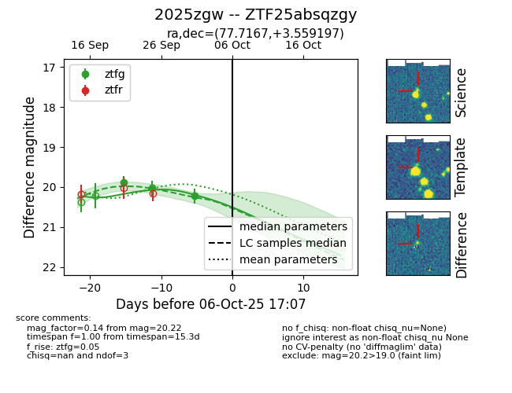
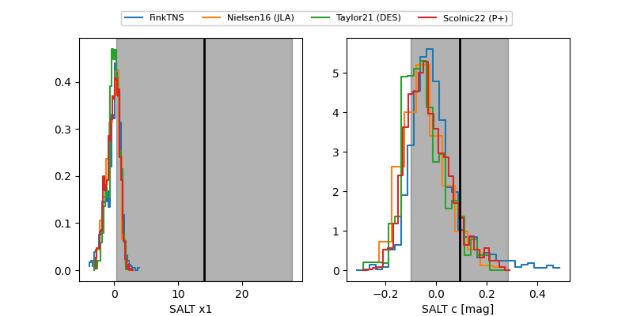

FINK: ZTF25absqzgy
Lasair: ZTF25absqzgy
ALeRCE: ZTF25absqzgy
TNS: 2025zgw
YSE: 2025zgw
ZTF25absqzgy (ztf,fink)
2025zgw (tns,yse)
equatorial (ra, dec) = (77.7167,+3.55920)
galactic (l, b) = (197.5469,-20.43213)


last ztfg=20.22
3 ztfg detections